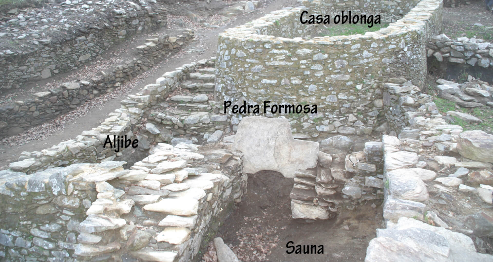
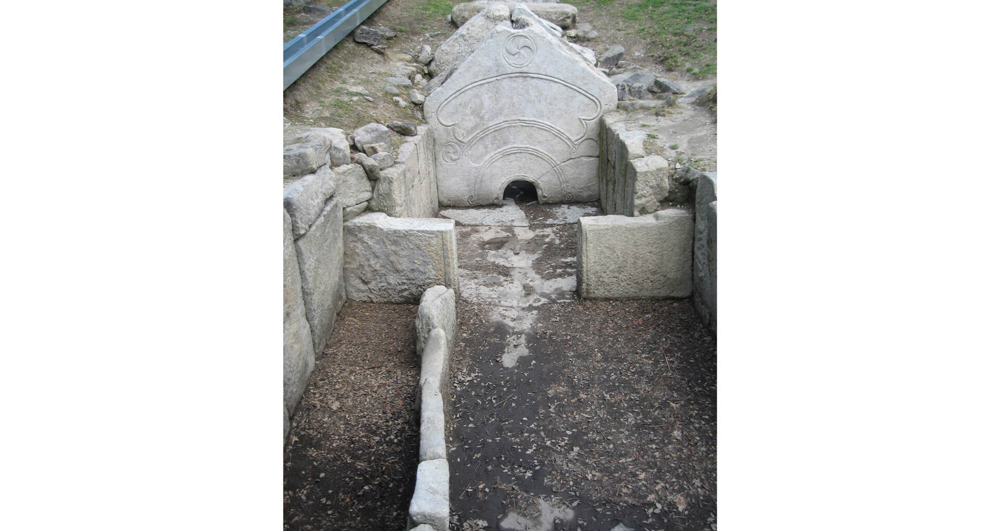
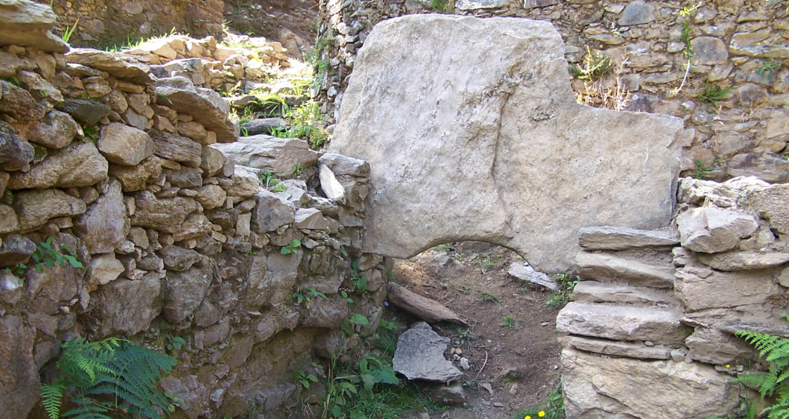

Se
trata de un conjunto formado por varias estructuras entre las que
destaca una gran construcción oblonga, una estructura con horno y un
aljibe. Se supone que este conjunto tiene un carácter público o
semipúblico.

Barrio exterior. Foto: Luis. F. López González/Xunta de Galicia
Durante mucho tiempo se atribuyó a esta zona una finalidad industrial
para la fundición de metales debido a la presencia del horno y a la
gran cantidad de escorias aparecidas. Sin embargo, la última excavación
confirmó que el supuesto horno del herrero en realidad era de un
espacio monumental con una sauna para fines rituales y de purificación.
El hallazgo de la pedra formosa (piedra situada en el acceso a la
saunas) terminó de corroborar el uso termal de este sitio.
Se encontraron más de una treintena de saunas en castros, la mayoría en
el norte de Portugal así como en Asturias y Norte de Galicia. Si bien
en un principio se creían que estas saunas databan del periodo romano,
ahora se sabe que su construcción se remonta a finales del siglo V a. C
principios del IV a. C, y que se mantienen hasta la época romana aunque
con numerosas modificaciones en su forma y quizás en su uso.

Saunas y pedras formosas de Galicia, Asturias y Portugal
Estas modificaciones son perceptibles en la sauna de Borneiro donde se observan estructuras primarias cortadas o reaprovechadas para asentar otras posteriores
Funcionamiento de las saunas
El funcionamiento sería bastante sencillo. Presentaban varias salas
diferenciadas por su temperatura: zona de acceso o adro (zona fría),
antecámara (zona templada), cámara principal (zona de vapor) y horno.
En Borneiro, la zona fría se puede corresponder con el lateral donde se
encuentra el aljibe, no apareciendo actualmente restos de la
antecámara. La cámara principal se comunicaba con el horno, donde se
calentaría el agua de una pileta o se vertería sobre unas piedras
calientes, produciendo vapor en toda la sala.
El acceso a la sala de vapor sería a través de un gran losa, la pedra
formosa, que presenta un hueco semicircular situado a ras de suelo cuyo
pequeño tamaño obliga a entrar en la sauna tumbados.
Se les llama pedras formosas por la abundante y vistosa decoración que
presentan las aparecidas en Portugal, no obstante la de Borneiro es
lisa.

Pedra
formosa de Borneiro
Esta pedra formosa es una de las tres conocidas en Galicia, las otras
pertenecen a la sauna de Castelón de Casteñoso (Fonsagrada) y a la de
Armeá (Allariz). Además existe otro castro donde no se ha hallado esta
piedra pero sí la sauna: castro de Punta dos Prados (Ortigueira).
Un espacio ritual
El carácter monumental de todo el conjunto hace suponer que no podría
ser un espacio balneario sin más. Hay varias interpretaciones pero casi
todas dan por sentado una finalidad ritual. Otra cuestión es el
significado de las ceremonias que allí se llevarían a cabo:
1. Según algunos investigadores el uso de estos edificios estaría
restringido por sexo, edad y grupo social, quedando destinados a las
élite guerreras. En estos espacios se realizarían:
• Ritos iniciáticos para el paso del adolescente a
hombre guerrero. Después del circuito termal, que representaría el paso
por el más allá, el joven saldría "renacido" como guerrero.
• Rituales de inserción del guerrero en la comunidad
tras la campaña guerrera. La idea básica sería que el guerrero a su
regreso de la batalla tenías que "renacer" para integrarse como
ciudadano pacífico.
2. Otros autores no encuentran razones para presuponer que solo fueran
usadas por varones adultos. Los vinculan con santuarios relacionados a
las divinidades (Navia, Bandue, Coso, Reve, etc.), usándose tanto en
ritos para guerreros, como en celebraciones en las que participaría
toda la comunidad (casamientos, firma de pactos, celebración de
victorias, etc.).
Estas celebraciones se realizarían en la casa oblonga situada al lado
de la sauna y durante las mismas consumirían grandes cantidades de
comida, tocarían música, bailarían y realizarían sacrificios de
animales.